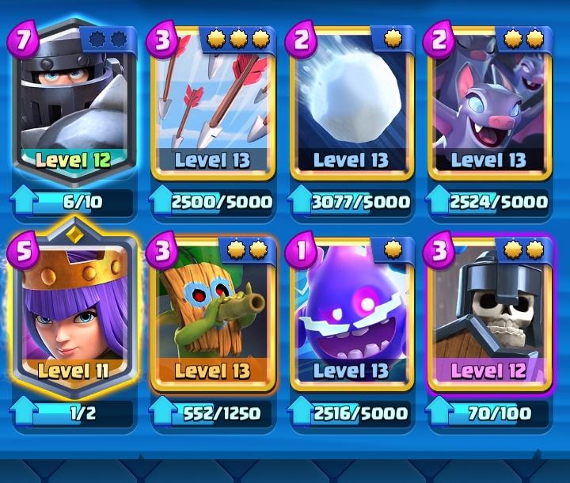

Assista o video do jogo clicando na imagem
Clash Royale
Clash Royale consiste em um jogo de estratégia no qual se lutará contra um adversário aleatório. O objetivo é destruir as torres inimigas usando cartas que poderão ser desbloqueadas ao longo do tempo. Algumas delas são trazidas de outro jogo da Supercell: Clash of Clans. Cada carta durante uma partida possui um preço de elixir, um recurso utilizado durante partidas, sendo acumulado ao longo do tempo a servir de energia para posicionar no campo de batalha as cartas selecionadas em menu; outrossim há a opção de jogar contra um amigo, jogar alguns modos, havendo-lhes um aliado a ajudar a aniquilar as torres do oponente.
Cartas
As cartas são o único método de soltar tropas, feitiços e defesas no campo de batalha. Elas podem ser obtidas comprando usando ouro na loja ou encontrando na sorte nos baús oferecidos e conquistados no jogo.
As duplicadas obtidas vão se acumulando conforme a barra de atualização, quando ela estiver cheia você pode atualiza-la com ouro e com isso seus atributos de estatísticas são melhorados. Atualmente existem 5 tipos de raridade de carta, abaixo estão numeradas de acordo com sua raridade:
- Carta dos Campeões
- Carta Lendária
- Carta Épica
- Carta Rara
- Carta Comum
| Carta | Raridade | Dificuldade |
|---|---|---|
| Flechas | Comum | 1 |
| Mago | Raro | 2 |
| Guardas | Épica | 3 |
| Mega cavaleiro | Lendária | 4 |
| Rainha arqueira | Campeão | 5 |

Times
As grandes organizações dominam o cenário competitivo de Clash Royale. É raro encontrar equipes que não tenham um grande histórico em outros e-Sports disputando a CRL. Isso é vantajoso para a profissionalização do game, uma vez que times conhecidos fornecem estrutura e trazem uma legião de fãs de outros jogos para assistir às partidas.
As principais equipes de Clash Royale a nível mundial são:
- Faze
- Team Liquid
- Keyd
- Falcons
- Sk Gaming
- Pain Gaming